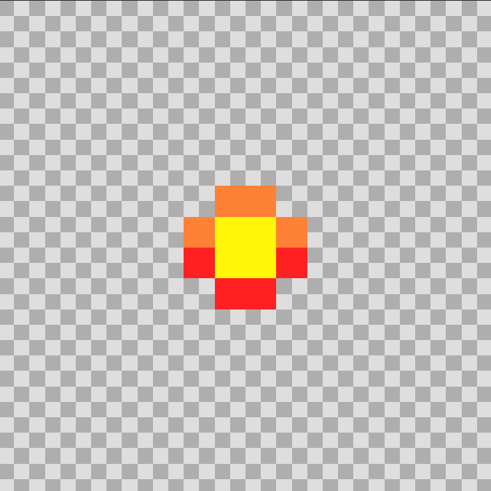

| Izena | Argazkia | Azalpena |
|---|---|---|
| tokia gorde |  |
Hemendik pasatzean tokia gordeko zaizu, hau da, hau zapaldu eta gero etsai batek bizitza bat kentzen dizunean hemen ber-hasiko zara. Bizitza gabe geratzen bazara ezingo dezu hemen berpiztu. |
| traspasadorea |  | Traspasadorea erabiltzea oso garrantzitsua da, paretak pasatzeko laguntzen dizulako.Hau erabili gabe ezingo dezu jolasa pasatu. |
| gema trasportatzailea |  |
Gema gorri eta disdiratsu honek beste mundura eramango dizu.Funtseskoa da hau hartzea bestela ezingo dezu beste munduan jolastu. |
| etsai nagusia |  |
Bigarren mapan.Etsai nagusiak bizitza barra bat du, tiro asko eman beharko dizkiozu hiltzeko, eta honek ikutzen badizu momentuan hilko dizu.Baino kontuz Saguzaharra ez da bakarrik egongo!!!bere laghuntzailearekin kontu handia izan behar duzu. |
| bigarren mapako tokia gorde |  |
Lehenengo mapako toki gordetze berdina dago.Hemendik pasatzean tokia gordeko zaizu, hau da, hau zapaldu eta gero etsai batek bizitza bat kentzen dizunean hemen ber-hasiko zara. Bizitza gabe geratzen bazara ezingo dezu hemen berpiztu. |
| proiektila |  |
Priektila gehien lagunduko dizun objetua da, tiro egitean etsaiak hilko dituzu.Etsai batzuk hiltzeko batekin nahiko izango da baino etsai nagusiarekin gehiago erabili behrko ditzu. Ez pantsatu honekin partida irabazita duzula!!! |